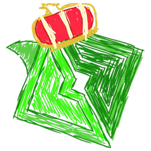
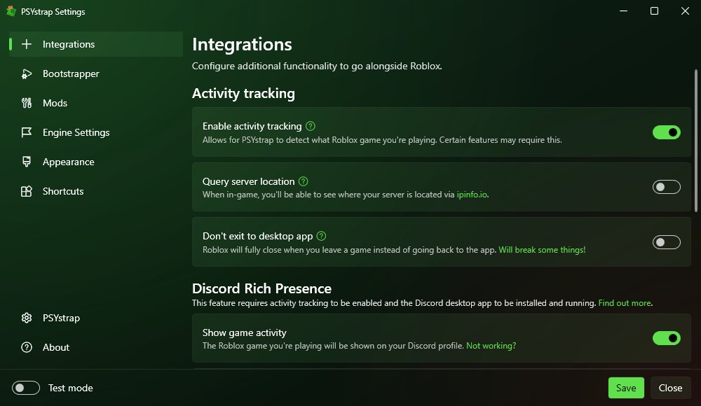
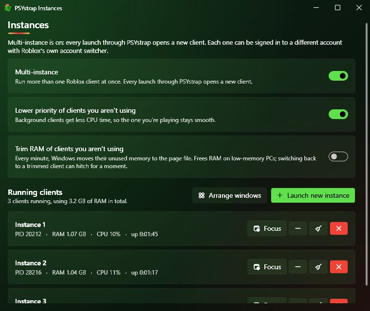
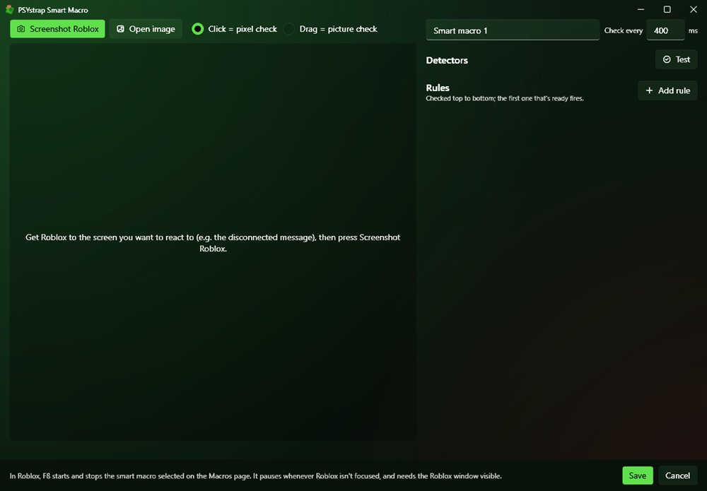
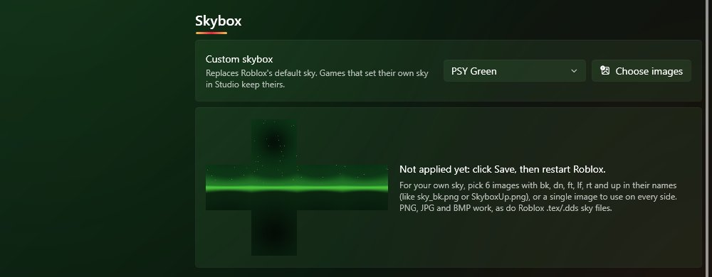

PSYstrapA Roblox launcher based on Bloxstrap, with an overlay, multi instance, saved accounts and macros added on top.

Everything Bloxstrap does (mods, fast flags, Discord status), plus all of this.
FPS, CPS, RAM, session time, server player count and playtime in the corner. Insert opens a menu with the FPS cap and potato mode.
Run as many Roblox windows as you want. Background ones go into efficiency mode and get muted.
Log in once and open any account in one click, even straight into the server your main is in.
F6 to record, F7 to play. They pause when Roblox isn't the focused window.
Watch the screen for a colour, a picture or some text, and do something when it shows up.
Got disconnected? It puts you back in the same server. Not if you got kicked or left yourself.
A tiny mouse wiggle before Roblox's 20 minute idle kick.
Make your side mouse buttons press E or Shift, only while you're in Roblox.
A different FPS cap or potato mode for each game.
A popup when a friend starts playing. Click it to join them.
Shows server size and region, hides games you don't want people to see, and can use your own Discord app.
A few presets, or your own images.
Everything is set up from these windows. No config files to edit.



Needs the .NET 6 Desktop Runtime. Windows asks to install it if you don't have it.
| Insertopen the PSYstrap menu |
| F6record a macro |
| F7play the selected macro |
| F8start a smart macro |
They only work while Roblox is the focused window.
PSYstrap doesn't inject anything into Roblox or read its memory, so it doesn't mess with the anti-cheat. It changes Roblox's own settings files, the same way Bloxstrap does, and sends normal keyboard and mouse input. The code is all on GitHub.